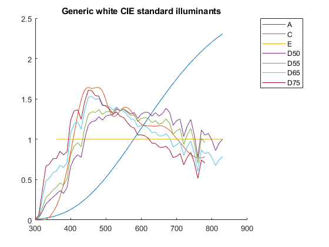
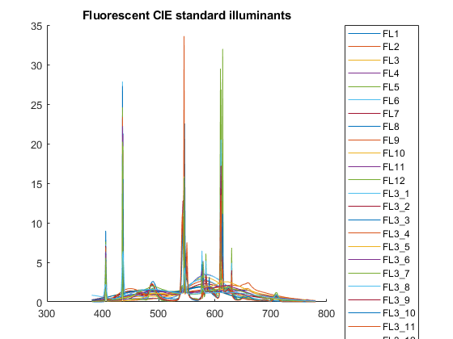
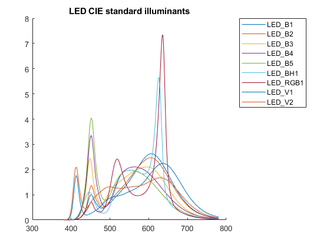

CIE_Illuminant
Navigate to: Home | Alphabetic list | Grouped list | Source code: CIE_Illuminant.m
Returns spectrum for CIE standard illuminants, based on official CIE data from https://cie.co.at/data-tables .
Contents
Syntax
rv = CIE_Illuminant(name,opts)
Input Arguments
- name: character string. Any of 'A';'C';'E','D','D50';'D55';'D65';'D75';'ID50';'ID65';'FL1';'FL2';'FL3';'FL4';'FL5';'FL6';'FL7';'FL8';'FL9';'FL10';'FL11';'FL12'; 'FL3.1';'FL3.2';'FL3.3';'FL3.4';'FL3.5';'FL3.6';'FL3.7';'FL3.8';'FL3.9';'FL3.10';'FL3.11';'FL3.12';'FL3.13';'FL3.14';'FL3.15'; 'HP1';'HP2';'HP3';'HP4';'HP5' 'LED-B1';'LED-B2';'LED-B3';'LED-B4';'LED-B5';'LED-BH1';'LED-RGB1';'LED-V1';'LED-V2'. For the 'FL3.x' spectra, also 'FL3_x' is accepted (underscore instead of point). For the 'LED-xx' spectra, also 'LED_xx' is accepted (underscore instead of dash).
- opts: name-value pairs.
| Name | Type | Value | Default | Meaning |
| 'lam' | real vector | valid wavelength array in nm | from CIE data | The wavelengths over which the offical illuminant will be interpolated |
| 'T' | real scalar | 4000 <= T <= 25000 | none | When |name == 'D'|, this is the CCT for illuminant D (daylight) |
Output Arguments
- rv: A spectrum with fields lam (a copy of the input argument), val (the spectrum values), name (an appropriate name), and description, (a description).
Algorithm
For all except 'D' or 'E', retrieves the data from CIE_Standard_Illuminants.mat, searches the appropriate standardized spectrum, and interpolates it over input argument lam. For illuminant 'D', calls CIE_Illuminant_D. For 'E', creates a flat, all val(i) == 1 spectrum over input argument lam (or [360;830] if not given).
The wavelength ranges in the standard are 300 nm to 780 nm in 5 nm steps for 'A';'C';'E','D','D50';'D55';'D65';'D75', and 380 nm to 780 nm in 5 nm steps for all FLxx and HPx and LEDx spectra. For 'D', the wavelength range of the standard is 300 nm to 830 nm in 5 nm steps.
See also
Usage Example
function ExampleCIE_Illuminant() names_white = {'A','C','E','D50','D55','D65','D75'}; names_fluorescent= {'FL1','FL2','FL3','FL4','FL5','FL6','FL7','FL8','FL9','FL10','FL11','FL12',... 'FL3_1','FL3_2','FL3_3','FL3_4','FL3_5','FL3_6','FL3_7','FL3_8','FL3_9','FL3_10','FL3_11','FL3_12','FL3_13','FL3_14','FL3_15'}; names_highpressure = {'HP1','HP2','HP3','HP4','HP5'}; names_LEDs = {'LED_B1','LED_B2','LED_B3','LED_B4','LED_B5','LED_BH1','LED_RGB1','LED_V1','LED_V2'}; plot1(names_white, 'Generic white CIE standard illuminants','NorthEastOutside'); plot1(names_fluorescent, 'Fluorescent CIE standard illuminants','NorthEastOutside'); plot1(names_highpressure, 'High pressure lamp CIE standard illuminants','NorthEastOutside'); plot1(names_LEDs, 'LED CIE standard illuminants','NorthEastOutside'); end function plot1(names, ititle, location) figure(); hold on; for i = 1:length(names) ni = names{i}; si = CIE_Illuminant(ni); plot(si.lam, si.val / mean(si.val)); end title(ititle); for i = 1:length(names) % make underscores printable in legend names{i} = replace(names{i}, '_','\_'); end legend(names,'Location',location); end  